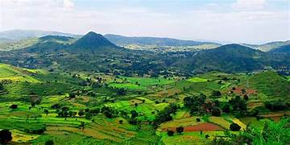

Welcome to the ultimate travel guide for[Your Chosen Destination].
Whether you are a nature lover, history enthusiast,or adventure seeker,
this destination has something for everyone.

ARAKU VALLEY
ARAKU VAllEY: Description:
Araku Valley is located in Vishakhapatnam district,
Andhra Pradesh and being surrounded by the magnificent Eastern Ghats the place hosts refreshing breaks for nature lovers.
The valley is known for its exquisite biodiversity and features
lush green tea and coffee plantations.
Highlights:
"Hill Station of Andhra Pradesh"
Araku Valley Tourism
Araku Valley is a comparatively unexplored hill station mostly visited by locals as
a weekend getaway and is situated some 120 kilometres away from Vishakhapatnam.
If you're a tourist looking for exclusivity and tranquillity, Vistadome train leaves Vishakhapatnam at 6.50 AM,
making way through 58 tunnels and passing over 84 bridges making way
through the breathtaking landscape to reach Araku in approximately in 5 hours, go, catch that!
AJANTHA ELLORA: Description:
"Ajanta Ellora Caves"
have always been recognized as the gems that represent Indian history and the impressive
artistry that existed in the foregone era. These tourist attractions consist of 64 rock-cut caves,
located in close proximity from the city of Aurangabad.
Today, Ajanta and Ellora Caves are a UNESCO World Heritage Site and exist in the wishlist of many travelers.
Since we didn't want your research to be exhausting, we decided to jot down all you need to know before you plan
a trip to Ajanta Ellora Caves.
highlights: Ajanta Caves date back to the time between 2nd century BCE to 480 or 650 CE. Walter M. Spink, the famous history scholar, have stated that the caves were built in two phases (Satavahana Period and Vākāṭaka Period).
On the other hand.
MEGHALAYA: Description: Shillong Tourism
Nestled amidst the pine-clad hills, Shillong, the capital of Meghalaya, unfolds like a picturesque canvas at an elevation of 1496 meters. Revered as the 'Scotland of the East,' the city offers a delightful blend of captivating landscapes, pleasant weather, and rich traditions. Shillong derives its name from Lei Shyllong, an idol worshipped at the Shillong Peak, and is home to diverse tribal communities each contributing to the vibrant cultural tapestry.
Highlights: Shillong's musical heartbeat resonates through its title as the "music capital of India." The city's westernized culture and youthful vibe contribute to its dynamic music scene
include in this delicious local cusine of[Your Chosen Destination].
From traditional dishes to modern fusion,the culinary scene here is diverse and mouth- watering. for ARAKU VALLEY Cuisine: The long drive to Boddavara is worth it if you’re heading there for breakfast. Though it is a small hut, Sannibabu serves delectable Uttapam & Pesarattu at a very reasonable price. Their ‘melting idlis’ will melt your heart as it has a heavenly & smooth texture and disappearing ability immediately after you consume them. for AJANTHA ELLORA Cuisine: The cuisine of Aurangabad exudes the flavour of North India and Hyderabadi cuisine as the city of Aurangabad was ruled by the Mughals and the Nizams. Those who love to gorge on delightful dishes can eat to their heart's content and take back the memories and aroma of famous flavoured Nawabi biriyanii or the aromatic pulao. Being a Muslim predominated area, this place is a food lover's delight, especially for non-vegetarians. Kebabs are another specialty. for MEGHALAYA Shillong Cuisine: Shillong fosters the flavours, colours, elements and popular dishes of an authentic Meghalayan cuisine. Do try the local preparations such as Tungtab which is a preparation of fermented dry fish, a wide variety of Momos, Tarumbai, which are fermented beans as well as the very popular Dohneiiong, a preparation of pork using local spices.
travel Tips
Best time to visit:
ARAKU VAllEY: [dec to feb]
AJANTHA ELLORA:[ June to March]
MEGHALAYA Shillong:[sep to dec]